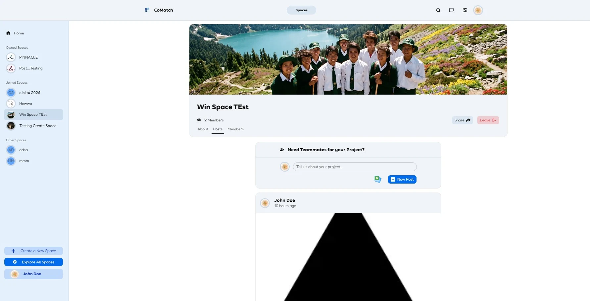

CoMatch↗
Good projects start with the right people.
Inside the application

Spaces bring members and recruitment posts together in one place.
A teammate-finding web app for university projects and hackathons, built with a friend. I worked on Spaces, recruitment posts, real-time chat, and automated tests.